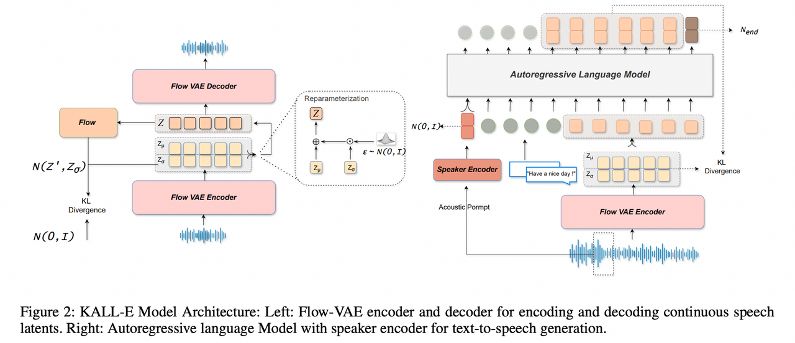

KALL-E:
Autoregressive Speech Synthesis with Next-Distribution Prediction
Kangxiang Xia 1*, Xinfa Zhu1*, Jixun Yao 1, Wenjie Tian 1, Wenhao Li 1, Lei Xie1†
1Audio, Speech and Language Processing Group (ASLP@NPU),
Northwestern Polytechnical University, Xi'an
xkx@mail.nwpu.edu.cn, lxie@nwpu.edu.cn
Abstract We introduce KALL-E, a novel autoregressive (AR) language model for text-to-speech (TTS) synthesis that operates by predicting the next distribution of continuous speech frames. Unlike existing methods, KALL-E directly models the continuous speech distribution conditioned on text, eliminating the need for any diffusion-based components. Specifically, we utilize a Flow-VAE to extract a continuous latent speech representation from waveforms, instead of relying on discrete speech tokens. A single AR Transformer is then trained to predict these continuous speech distributions from text, optimizing a Kullback–Leibler divergence loss as its objective. Experimental results demonstrate that KALL-E achieves superior speech synthesis quality and can even adapt to a target speaker from just a single sample. Importantly, KALL-E provides a more direct and effective approach for utilizing continuous speech representations in TTS.
Contents
This page is for research demonstration purposes only.
System Overview

Voice cloning
Given prompt audio and text, KALL-E can generate audio with a specific timbre and content.
| Prompt Audio And Text | Target Text And Generated Audio |
|---|---|
Youth Congress always remained in highlights of the leading state news. |
There are narrow teeth on lateral margin of prothorax which are long. |
Without public access to the advisory, it is obviously impossible to comment in detail. |
The concept of the piece was to "make an orchestra speak". |
涉及征用的三百余亩土地，共牵扯九十户人家。 |
抵达岳阳后，又坐汽车第一时间，赶往岳阳市内涝现场。 |
时值夏季，北江河中水量充沛，水流湍急。 |
全球每年有超过一百三十五万人，因交通事故而死亡。 |
Context Awareness
Simply providing the target text (No Audio Prompt Required), KALL-E can autonomously interpret the content, whether it’s conversational dialogue, poetry, an audiobook, or a news broadcast, and render it in the most suitable synthesis style.
| Target Text | Generated Audio |
|---|---|
| 哎? 说到有声书，大家听了我们实验室的语音作品之后，呃都会觉得，嗯音色效果非常逼真，甚至还有呼吸声，哇塞，真的感觉就像真人在说话 | |
| 帘外雨潺潺，春意阑珊。罗衾不耐五更寒。梦里不知身是客，一晌贪欢。独自莫凭栏，无限江山。别时容易见时难。流水落花春去也，天上人间。 | |
| 大青马的步伐似乎也不那么镇定了。陈阵的双腿和马身都在发抖，并迅速发生可怕的共振，继而传染放大了人马共同的恐惧。大青马的耳朵背向身后，紧张关注着那条探子狼。 | |
| 今年以来，特朗普政府进一步加大针对赴美签证申请者的审查力度，并限制多国公民入境。 | |
KALL-E can synthesize audio with corresponding emotions based solely on input text.
| Target Text | Generated Audio |
|---|---|
| 你知道吗，和你在一起的每一天都充满快乐。 | |
| 你知道吗，和你在一起的每一天都充满愤怒。 | |
| 你知道吗，和你在一起的每一天都充满悲伤。 | |
| Every day with you is full of joy. | |
| Every day with you is filled with sadness. | |
| Every day with you is filled with anger. |
| 哈哈哈哈，你今天的造型真搞笑。。 | |
| 啊？这消息来的也太突然了，我完全没准备。 | |
| 嘿嘿，我刚刚偷吃了一块你的蛋糕。 | |
| 独自一人，街灯拉长了我的影子，也拉长了孤独。 | |
| 阿嚏，昨天太冷了，我有点感冒了。 | |
| 天真的太黑了，我很害怕一个人待在家里。 |
Unconditional Voice samplings
Given text, KALL-E can generate a variety of voices.
| Target Text | Voice1 | Voice2 |
|---|---|---|
| We introduce KALL-E, a novel autoregressive language model for text-to-speech synthesis that operates by predicting the next distribution of continuous speech frames. | ||
| To simultaneously achieve high voice diversity and reproducibility, we introduce Speaker Voice Distribution Modeling. | ||
| 没错，嗯，我们觉得这项技术未来会在很多应用场景上有大用，比如说有声书啊，还有对话生成，嗯，都可以用上。 | ||
| 嗯，没错，AI 和艺术的结合，让每个人的声音都有机会被传递出去，这点还是挺有意思的。 |
Test Time Training
To exploit this capacity at inference, KALL-E adopts test-time training (TTT) procedure that adapts the language model to a new speaker from just one utterance. Given the prompt utterance, we employ the pretrained Flow-VAE to extract the distribution of the prompt speech. This distribution constitutes the supervision signal for TTT.
| Prompt Audio And Text | Target Text | KALL-E | KALL-E(TTT) |
|---|---|---|---|
有些事不管我们如何努力回不去就是回不去了有些事不管我们如何努力回不去就是回不去了。 |
我本以为会好起来，但现实一次次把我推向深渊，那种绝望和无助的感觉，让我觉得自己快要崩溃了。 | ||
Hi everybody, Anaya thank you for that beautiful introduction I could not be prouder of everything you've done in your time with the Obama foundation. |
In the absence of confiscation the Portuguese Inquisitors were not earnest in tracing the heresies of ancestors or in following up the records of fugitives. | ||
对这就是我万人敬仰的太乙真人虽然有点婴儿肥但也掩不住我逼人的帅气。 |
突然，身边一阵笑声。我看着他们，意气风发地挺直了胸膛，甩了甩那稍显肉感的双臂。 | ||
I dropped out of Reed College after the first six months but then stayed around as a drop-in for another eighteen months or so before I really quit. |
The recipe calls for two cups of flour and one teaspoon of baking soda. |